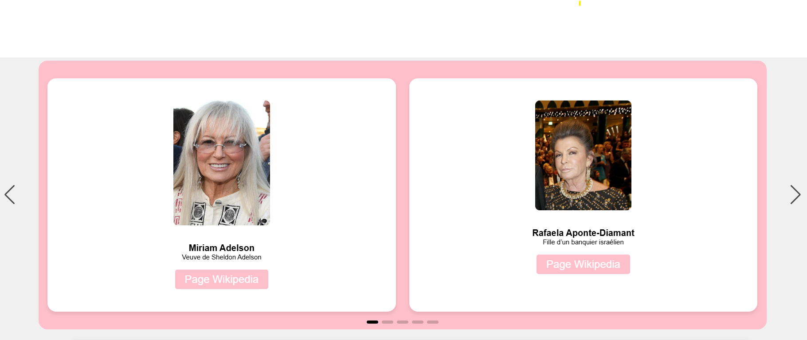
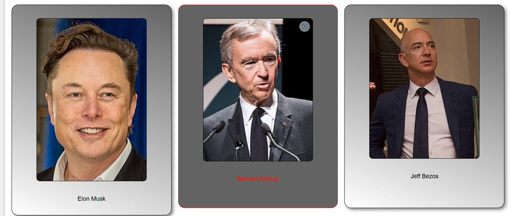
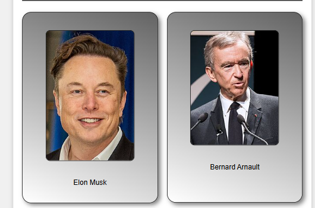
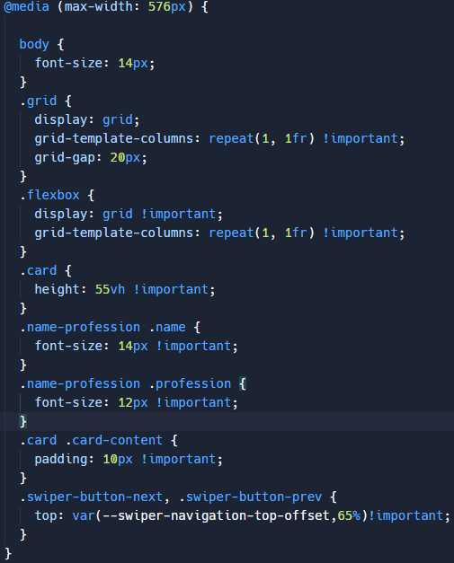

Fiche de Présentation du Site Responsive
Objectif Créer un Site Web Responsive sur les hommes et les femmes les Plus Riches du Monde
Description
Dans le cadre de mon BTS SIO, option SLAM, j'ai développé un site web responsive utilisant du HTML, du JavaScript et du CSS, hébergé sur Replit. Ce site offre une présentation détaillée des hommes et des femmes les plus riches du monde, avec des informations actualisées sur leur fortune, leurs entreprises, et leurs contributions économiques. Il vise à fournir une vue d'ensemble claire et attrayante de ces personnalités influentes.
Fonctionnalités principales
- Présentation générale : Section dédiée à une introduction sur le thème du site, répertoriant les femmes et hommes les plus riches du monde.
- Profils individuels : Galerie présentant les profils détaillés des hommes les plus riches, incluant des informations biographiques, des statistiques financières, des captures d'écran et des liens vers des sources d'information supplémentaires.
- Actualités financières : Section consacrée aux dernières nouvelles et analyses économiques relatives aux fortunes des personnes présentées sur le site.
Technologies utilisées
- Langage de balisage : HTML pour structurer le contenu du site.
- JavaScript : Pour les interactions dynamiques et les animations, ainsi que pour la mise à jour en temps réel des données.
- Feuilles de style : CSS pour le design et la mise en page responsive, assurant une expérience utilisateur optimale sur tous les types d'appareils.
Objectifs pédagogiques
Ce projet m'a permis de consolider mes compétences en développement web front-end, en mettant particulièrement l'accent sur :
- Création de sites web responsives : Adaptation du design et de la mise en page pour une utilisation optimale sur divers appareils (ordinateurs, tablettes, smartphones).
- Utilisation avancée de CSS : Techniques de design moderne, flexbox, grid, animations et transitions.
- Structuration sémantique : Organisation logique et claire du contenu avec HTML.
- Interactivité et dynamisme : Utilisation de JavaScript pour améliorer l'expérience utilisateur et fournir des fonctionnalités interactives.
- Gestion de projet web : Planification, organisation du contenu et gestion des versions avec Git et Replit.
Déploiement
Le site est hébergé sur Replit, permettant une collaboration facile et un déploiement rapide.
Ce projet illustre ma capacité à développer des sites web modernes et responsives, tout en approfondissant ma connaissance des outils et des technologies de développement web.



